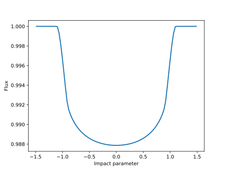
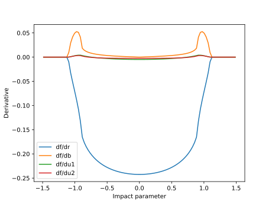

Quick start
A simple light curve
First, let's import Limbdark:
import LimbdarkNow let's define some quantities we'll use throughout these examples:
# Define an array of impact parameters
npts = 100
b = zeros(npts)
for i = 1:npts
b[i] = 3.0 * ((i - 0.5) / float(npts) - 0.5)
end
# Define the occultor radius
r = 0.1
# Define the quadratic limb darkening coefficients
u_n = [0.40, 0.26]
# Define the struct to hold the transit info
trans = Limbdark.transit_init(r, 0.0, u_n, true)To compute a light curve, we call the transit_poly!(trans) method:
flux = zeros(npts)
for i = 1:npts
trans.b = abs(b[i])
flux[i] = Limbdark.transit_poly!(trans)
endHere's what the light curve looks like:
plot(b, flux, linewidth=2);
We can also compute the derivatives with respect to r, b, and u_n:
dfdr = zeros(npts)
dfdb = zeros(npts)
dfdu1 = zeros(npts)
dfdu2 = zeros(npts)
for i = 1:npts
trans.b = abs(b[i])
flux[i] = Limbdark.transit_poly!(trans)
dfdr[i] = trans.dfdrb[1]
dfdb[i] = trans.dfdrb[2]
dfdu1[i] = trans.dfdu[1]
dfdu2[i] = trans.dfdu[2]
endHere's what they all look like:
plot(b, dfdr, label="df/dr")
plot(b, dfdb, label="df/db")
plot(b, dfdu1, label="df/du1")
plot(b, dfdu2, label="df/du2")